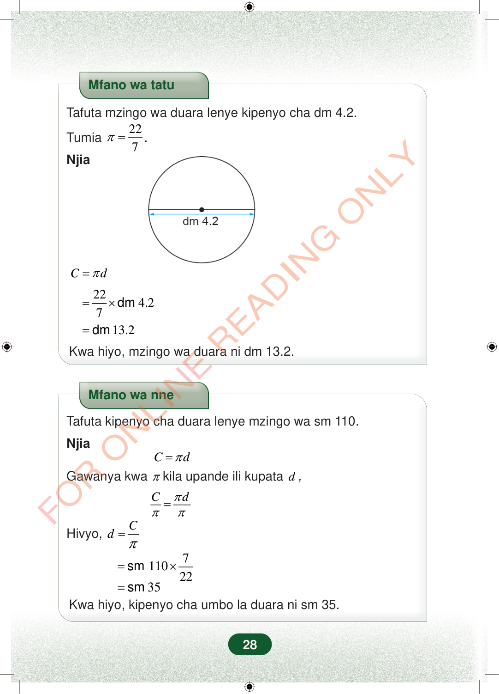

Mfano wa tatuTafuta mzingo wa duara lenye kipenyo cha dm 4.2.Tumia227π=.NjiaCdπ=224.27=×dm13.2=dmKwa hiyo, mzingo wa duara ni dm 13.2.Mfano wa nneTafuta kipenyo cha duara lenye mzingo wa sm 110.NjiaCdπ=Gawanya kwaπkila upande ili kupatad,Cdπππ=Cdπ=Hivyo,711022=×sm35=smKwa hiyo, kipenyo cha umbo la duara ni sm 35.28Mfano wa tatu
Tafuta mzingo wa duara lenye kipenyo cha dm 4.2.
Tumia 22 7 π = .
Njia
C d π =
22 4.2 7 = × dm
13.2 = dm
Kwa hiyo, mzingo wa duara ni dm 13.2.
Mfano wa nne
Tafuta kipenyo cha duara lenye mzingo wa sm 110.
Njia C d π = Gawanya kwa π kila upande ili kupata d ,
C d π π π =
C d π =
Hivyo,
7 110 22 = × sm
35 = sm Kwa hiyo, kipenyo cha umbo la duara ni sm 35.
28
Mfano wa tatuTafuta mzingo wa duara lenye kipenyo cha dm 4.2.Tumia <math><mrow><mi>π</mi><mo>=</mo><mstyle displaystyle="true" scriptlevel="0"><mfrac><mn>22</mn><mn>7</mn></mfrac></mstyle></mrow></math>.NjiaDuara lenye kipenyo cha dm 4.2 kilichoonyeshwa kwa mstari wa mlalo unaopita katikati.dm 4.2<math><mrow><mi>C</mi><mo>=</mo><mi>π</mi><mi>d</mi></mrow></math><math><mrow><mo>=</mo><mstyle displaystyle="true" scriptlevel="0"><mfrac><mn>22</mn><mn>7</mn></mfrac></mstyle><mo>×</mo><mpadded lspace="0"><mi>dm</mi></mpadded><mtext> </mtext><mn>4.2</mn></mrow></math><math><mrow><mo>=</mo><mpadded lspace="0"><mi>dm</mi></mpadded><mtext> </mtext><mn>13.2</mn></mrow></math>Kwa hiyo, mzingo wa duara ni dm 13.2.Mfano wa nneTafuta kipenyo cha duara lenye mzingo wa sm 110.Njia<math><mrow><mi>C</mi><mo>=</mo><mi>π</mi><mi>d</mi></mrow></math>Gawanya kwa <math><mi>π</mi></math> kila upande ili kupata <math><mi>d</mi></math>,<math><mrow><mstyle displaystyle="true" scriptlevel="0"><mfrac><mi>C</mi><mi>π</mi></mfrac></mstyle><mo>=</mo><mstyle displaystyle="true" scriptlevel="0"><mfrac><mrow><mi>π</mi><mi>d</mi></mrow><mi>π</mi></mfrac></mstyle></mrow></math><math><mrow><mi>H</mi><mi>i</mi><mi>v</mi><mi>y</mi><mi>o</mi><mo separator="true">,</mo><mtext> </mtext><mi>d</mi><mo>=</mo><mstyle displaystyle="true" scriptlevel="0"><mfrac><mi>C</mi><mi>π</mi></mfrac></mstyle></mrow></math><math><mrow><mo>=</mo><mpadded lspace="0"><mi>sm</mi></mpadded><mtext> </mtext><mn>110</mn><mo>×</mo><mstyle displaystyle="true" scriptlevel="0"><mfrac><mn>7</mn><mn>22</mn></mfrac></mstyle></mrow></math><math><mrow><mo>=</mo><mpadded lspace="0"><mi>sm</mi></mpadded><mtext> </mtext><mn>35</mn></mrow></math>Kwa hiyo, kipenyo cha umbo la duara ni sm 35.